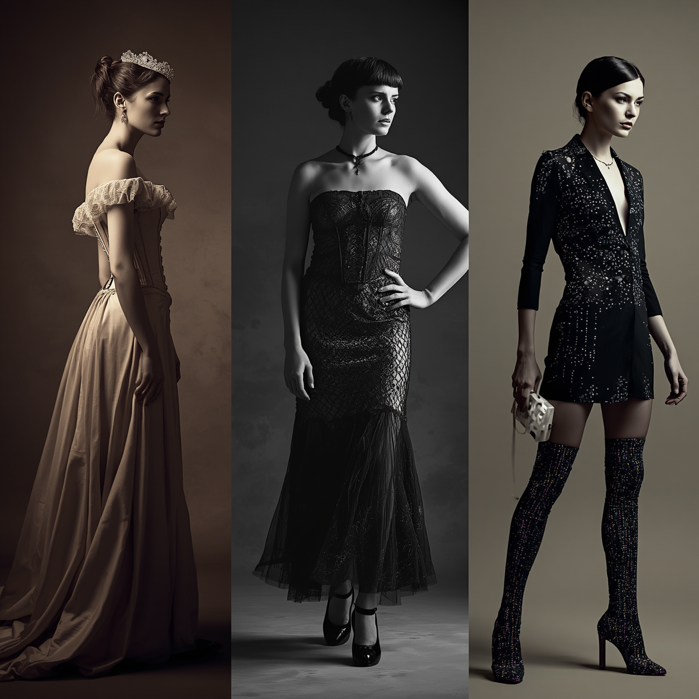
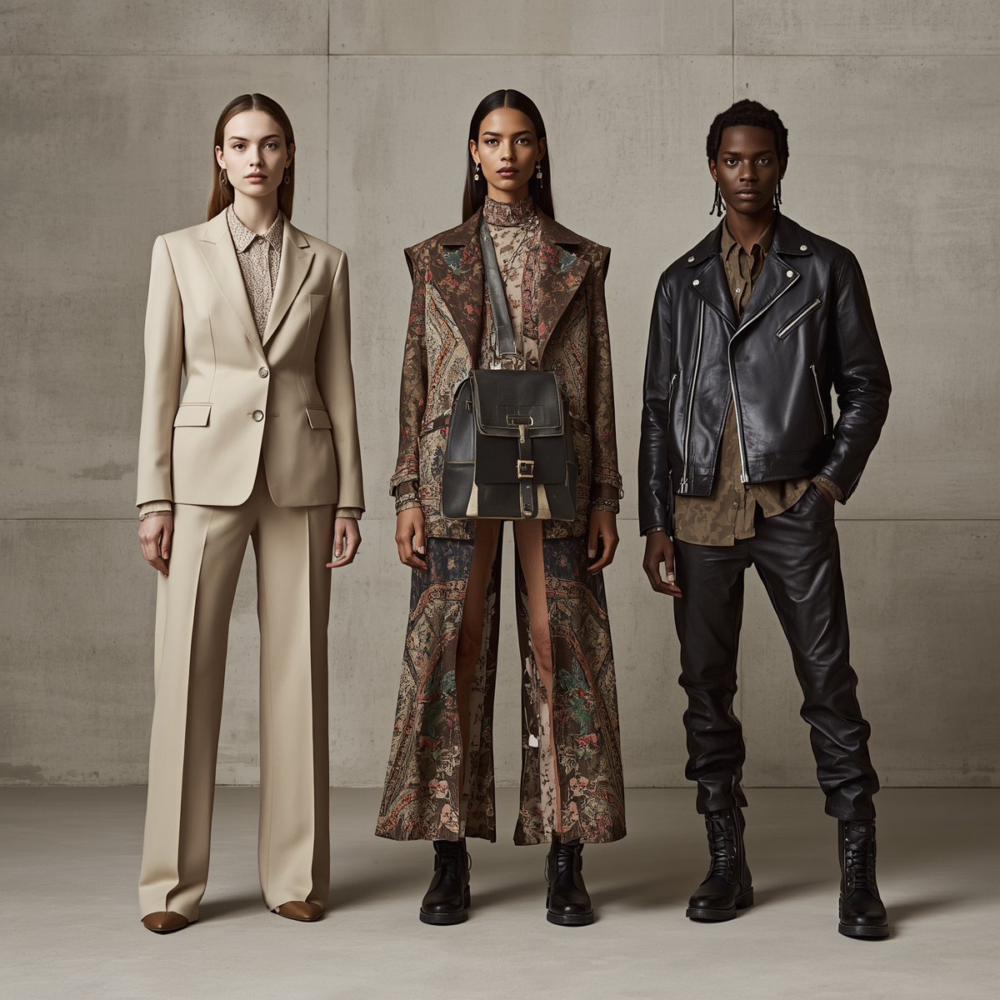
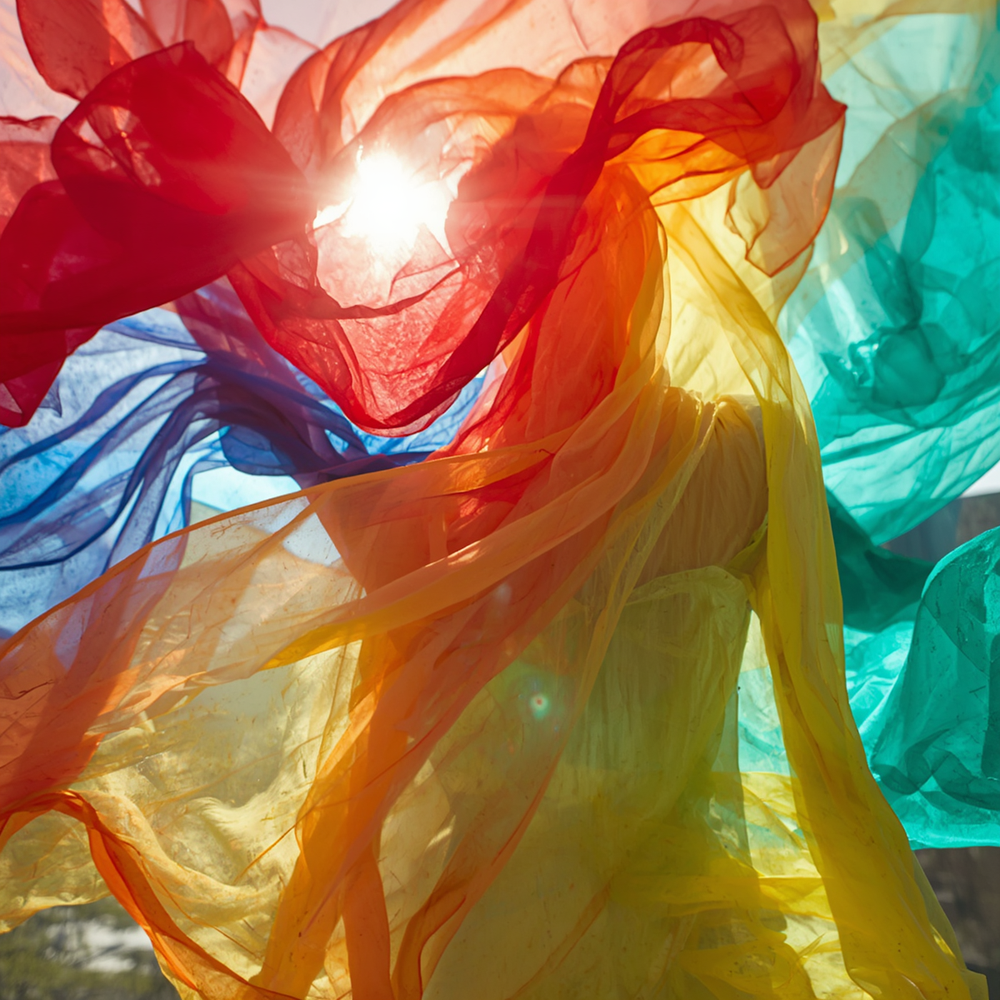
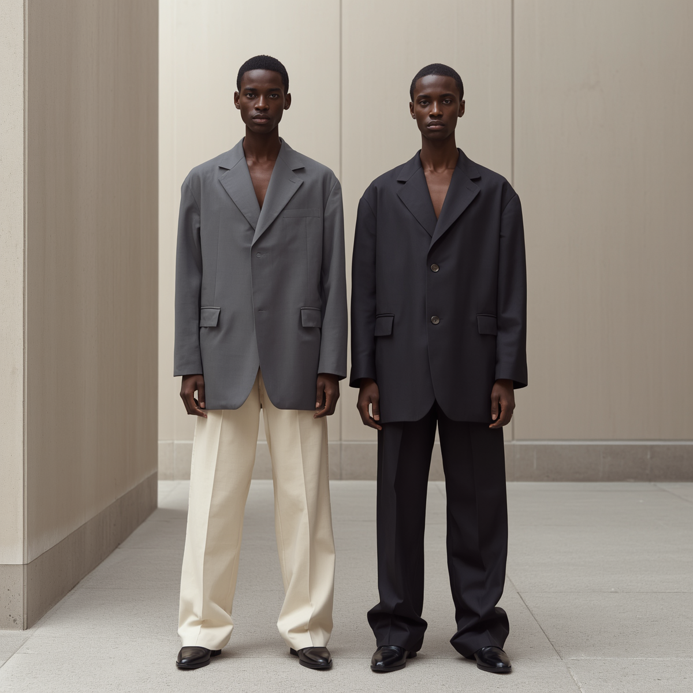

A moda no novo século deixou de ser um manual de regras ditado por poucas marcas para se transformar em um canal direto de liberdade, autenticidade e diversidade. Hoje, com a velocidade da tecnologia e o poder das redes sociais, as tendências surgem e se espalham em tempo real, enquanto conceitos antigos de gênero, idade e padrões corporais dão lugar a uma expressão individual muito mais livre e plural. Ao mesmo tempo, o crescimento da consciência ambiental trouxe a moda circular, os brechós e os materiais sustentáveis para o centro do debate, mostrando que vestir-se no século XXI não é apenas uma questão de estética, mas também um ato de responsabilidade com o planeta e de afirmação da própria identidade.

Estilos PessoalO estilo pessoal é a sua assinatura visual e vai muito além de seguir tendências. Ele é importante porque reflete seu **autoconhecimento** e sua **autenticidade**, permitindo que você comunique quem é sem precisar dizer uma única palavra. Ter um estilo próprio constrói confiança e te dá liberdade para vestir o que realmente faz sentido para a sua vida, sem depender de modismos passageiros.

As cores são o elemento visual mais imediato e poderoso da moda, atuando como uma linguagem não verbal capaz de transmitir intenções e emoções antes mesmo que qualquer palavra seja dita. Elas possuem o poder de influenciar não apenas a percepção de quem nos observa — evocando sensações como energia, serenidade, mistério ou sofisticação —, mas também o nosso próprio estado de espírito, impactando diretamente o nosso humor ao vestir. Além de guiarem as tendências de cada época e refletirem o momento cultural do mundo, as cores transformam o ato de vestir em um canal de expressão psicologicamente estratégico, dinâmico e profundamente pessoal.

Moda Sem Gênero
A moda sem gênero rompe com as divisões tradicionais de masculino e feminino para colocar a liberdade de expressão e a funcionalidade no centro do vestuário. Ao focar em modelagens fluidas, cortes versáteis e na autenticidade de quem veste, essa tendência desafia estereótipos históricos e transforma a roupa em uma tela neutra. Mais do que uma escolha estética, a moda agênero reflete uma evolução cultural que celebra a individualidade e prova que o estilo não deve ter rótulos, limites ou imposições.